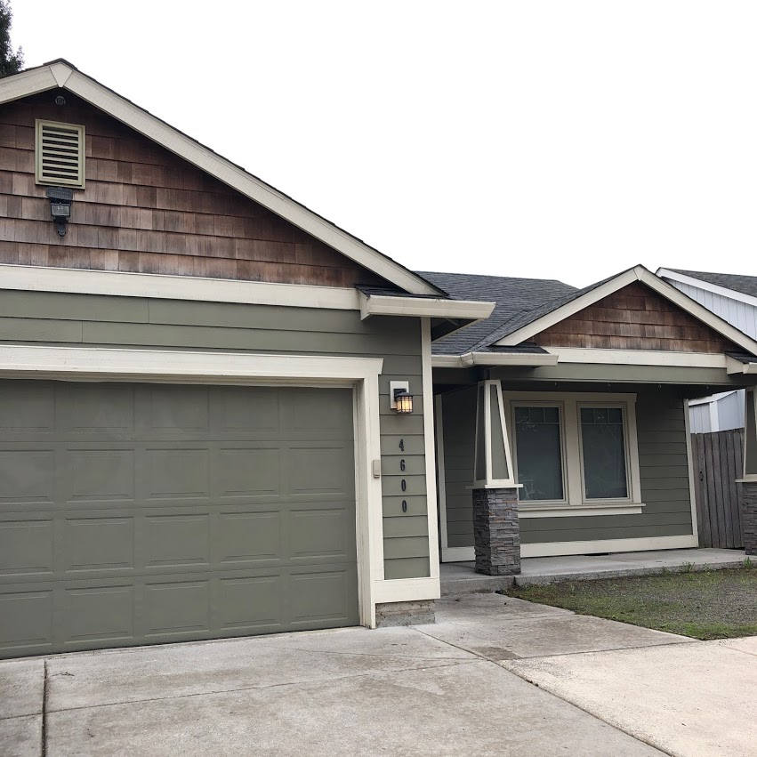

we sold our house! let’s back up though.
i think we can all agree: 2017 was an overall shitty year. shitty news, shitty politics (#notmypresident). i wanted a better 2018, so what could i actually control? here’s a quick and dirty timeline.
i had a decent job for the past 3 years. good people, fun and exciting work (really!) sadly, exponentially the place came crumbling down. we went from this cool little start up to a full blown piece of shit corporation. horrible upper management, bullshit politics, underpaid/overworked employees. i stuck with it for a while though, with hopes of things getting better. they didn’t.
i was being taken advantage of by the company, management, and my peers. i put in too much, and really got nothing in return. i was over it and depressed. the depression was winning and it was affecting my entire life. at the end of october, i made the decision to leave.
we wanted to buy a house. housing prices were blowing up here, so we started to explore just outside portland. we found milwaukie was still within budget and close enough to portland that it would work for us. it worked for a couple years, but we soon realized we need to live in a city, not outside a city. we need to be able to walk or bike everywhere. we need a house that doesn’t require owning a car.
i will always love portland. but we are ready for a new city. we visiting san diego and fell in love. the climate is consistent year round, the food is amazing, and the cost of living is compareable to portland. our plan is to move when our lease is up in january 2019.
